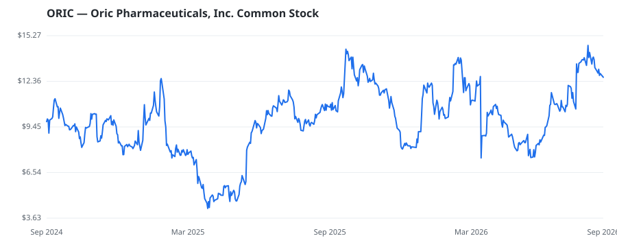

bullish · bearish · n/a — dots: price>SMA10 · SMA10>SMA50 · SMA50>SMA200 · up>down volume (20d)
Pharmaceuticals & Biotech · small cap

ORIC Pharmaceuticals Inc is a clinical-stage biopharmaceutical company. It has a pipeline of therapies designed to counter resistance mechanisms in cancer by leveraging its expertise within three specific areas: hormone-dependent cancers, precision oncology, and key tumor dependencies. The company has product candidates namely ORIC-944, ORIC-114, and ORIC-533. The Company has as one operating segment, focused on the discovery and development of therapies designed to counter the resistance mechanisms in cancer. PHARMACEUTICAL PREPARATIONS · website
| Revenue | $0 | Net income | $-129.5M |
|---|---|---|---|
| Operating income | $-143.0M | Diluted EPS | $-1.47 |
| Assets | $408.9M | Equity | $384.4M |
This name produced 0.3% of the ranked funds’ total alpha.
| Fund | Fund alpha vs SPY | Position | % of book |
|---|---|---|---|
| Nextech Invest, Ltd. | +325% | $78M | 3.7% |
| MPM BioImpact LLC | +13% | $20M | 1.2% |
| PFIZER INC | +30% | $4M | 2.1% |
| SECTORAL ASSET MANAGEMENT INC | +8% | $0M | 0.2% |
Hedge data: SEC EDGAR 13F · ranked funds beat SPY in >50% of their quarters · fund alpha = mirror-portfolio return minus SPY.